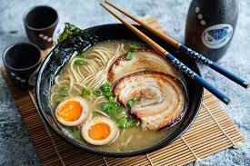

Ramen

Ramen is a Japanese noodle soup that's made up of a broth base, wheat noodles, and various toppings. The broth is often rich and flavorful, and can be made from bone-in pork, chicken, or seafood, and seasoned with soy sauce, miso, or salt. The noodles can range from thick to thin, straight to curly, and come in many different varieties. Ramen is often topped with meats or vegetables, such as sliced pork, nori (dried seaweed), menma (bamboo shoots), scallions, bean sprouts, or fish cake, and sometimes a boiled egg.
- 2 cloves garlic
- 1/2 tsp ginger
- 1 shallot
- 1 tbsp toasted white sesame seeds
- 1 tbsp toasted sesame oil
- 1/4 lbs ground pork
- 1 tsp doubanjiang
- 3 tbsp miso
- 1 tbsp sugar
- 1 tbsp sake
- 4 cups chicken stock
- 1 tsp diamond crystal kosher salt
- 1/4 tsp white pepper powder
- 2 servings fresh ramen noodles
- homemade chashu
- spicy bean sprout salad
- ramen egg
- frozen or canned corn
- nori
- green onion/scallion
- Preheat a medium pot over medium-low heat. When it‘s hot, add 1 Tbsp toasted sesame oil. Then, add the garlic, ginger, and shallot.
- With a wooden spatula, stir-fry until fragrant.
- Add ¼ lb ground pork and increase the heat to medium. Cook the meat until it‘s no longer pink.
- Add 1 tsp doubanjiang (spicy chili bean paste) and 3 Tbsp miso. Quickly blend well with the meat before they get burnt.
- Add the ground sesame seeds and 1 Tbsp sugar and mix well.
- Add 1 Tbsp sake and 4 cups chicken stock/broth and bring the mixture to a simmer.
- Taste your soup and add up to 1 tsp Diamond Crystal kosher salt (if necessary) and ¼ tsp white pepper powder. Tip: Each brand of chicken stock varies in saltiness, so you must taste your soup to decide how much salt to add.
- Your soup broth is now done. Cover with the lid and keep the soup broth simmering while you cook the noodles.
- Bring a large pot of unsalted water to a boil (ramen noodles already include salt in the dough). When the water is boiling, ladle some of the hot water into the individual ramen bowls to warm them up. Meanwhile, gently shake 2 servings fresh ramen noodles with your hand to separate and loosen them up.
- Cook the noodles according to the package instructions. I usually cook the noodles al dente (about 15 seconds less than the suggested cooking time). Before your noodles are done cooking, empty the hot water from the warmed ramen bowls.
- When the noodles are done, quickly pick them up with a mesh sieve and shake out the excess water. Make sure to drain the water well, as you don’t want it to dilute your soup. Serve the noodles into the warmed bowls.
- Add the piping-hot ramen soup broth to each bowl.
- Place the toppings of your choice on the ramen noodles and serve immediately. Add the optional condiments to your Miso Ramen and enjoy.